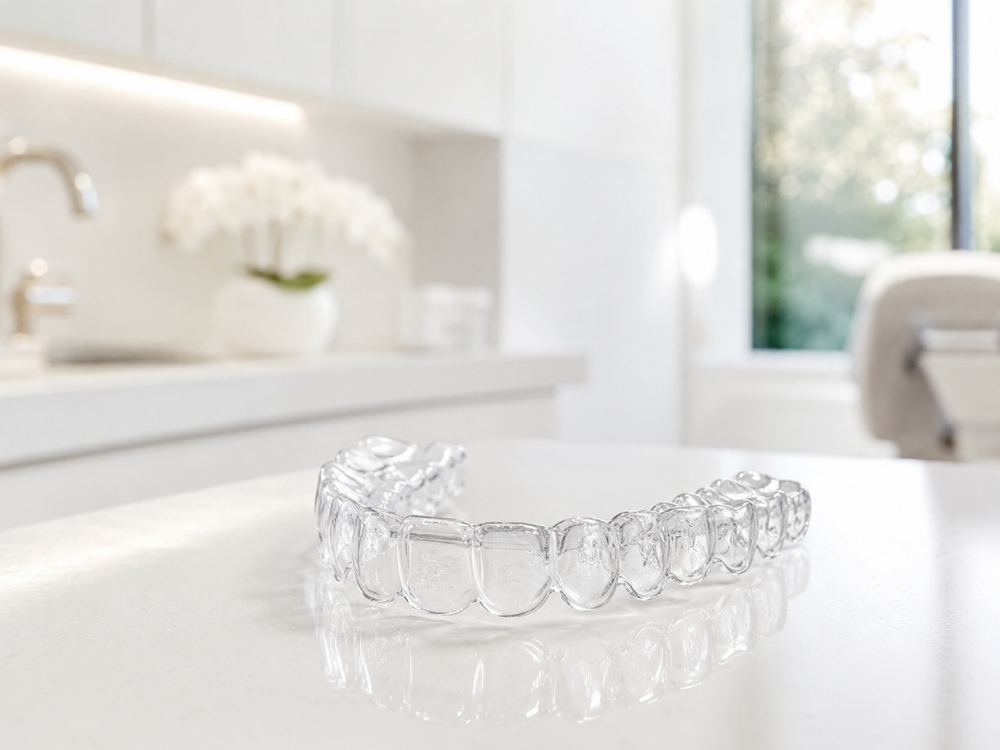
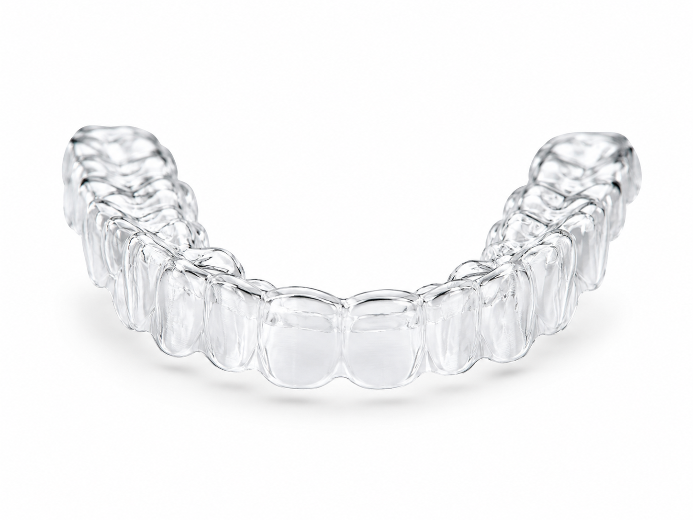
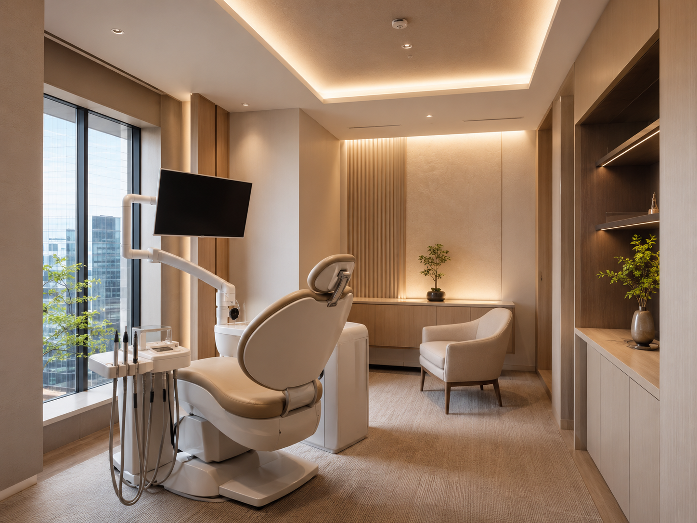
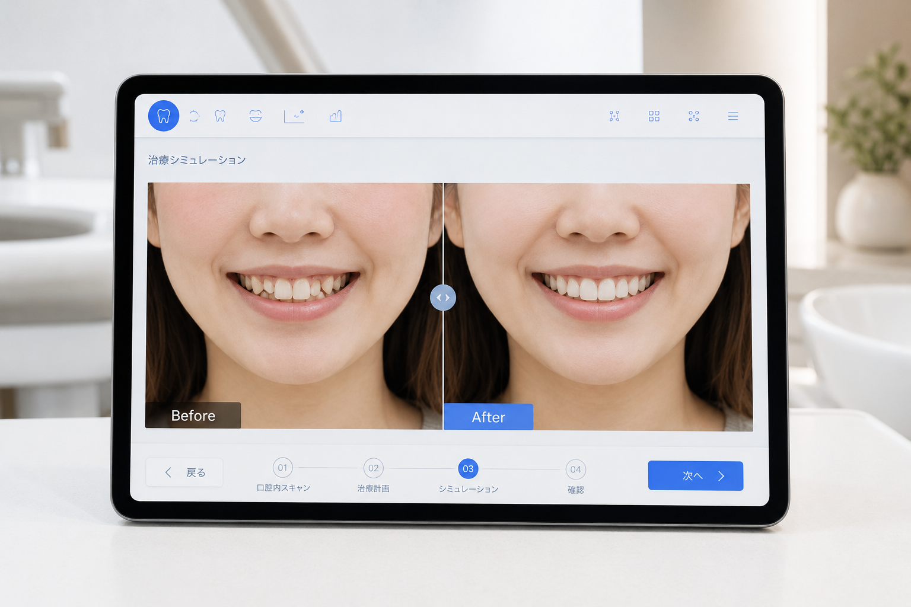
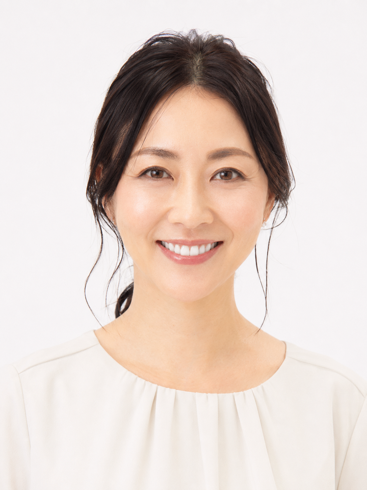

月10組限定 ｜ 初回カウンセリング
通常5,500円 → 無料
写真を撮られるとき、つい手で口元を隠してしまう
大笑いするとき、口元が気になって声を抑えてしまう
接客中、笑顔でいると歯並びを見られていないか気になる
初対面の人と話すとき、口元を見られているような気がする
鏡を見るたびに歯並びが気になって、気分が下がる
それは、あなたが悪いのではありません。
歯並びを整えれば、あなたの笑顔は自然と変わります。

インビザライン®は、0.5mm厚の透明なマウスピースで歯並びを整える最新矯正法です。ワイヤーもブラケットも使わないため、装着していても周囲からほとんど気づかれません。接客の仕事中も、大切な商談中も、あなたのスマイルをそっとサポートします。
世界100カ国以上・1,700万人以上が選んだ
透明マウスピース矯正のグローバルスタンダード

インビザライン® マウスピース（イメージ）
痛みを感じにくい
ワイヤーと比べ口内への刺激が少なく、日常生活の不快感を軽減します。
透明で目立たない
0.5mm厚の透明素材。装着したまま接客・商談・笑顔が続けられます。
食事中は取り外せる
食事・歯磨きのときは外せるので虫歯リスクが低く、衛生的に続けられます。
通院が少なく、続けやすい
約6〜8週ごとの通院で治療が進むため、忙しい方にも無理なく続けられます。
当院はインビザライン社より上位1%のクリニックに与えられるダイヤモンドプロバイダーの認定を取得しています。
ダイヤモンドプロバイダーは、インビザライン社が認定する最高位の資格です。都内でもわずかな医院しか取得できていない権威ある証明。豊富な症例数と高い技術水準を持つ医院にのみ与えられます。

あなたの矯正を最初から最後まで院長が担当します。完全個室・完全予約制だから、周囲を気にせずゆっくりと相談できます。治療中のちょっとした変化も、担当医師がすぐに対応します。
治療を始める前に、AIが予測する仕上がりイメージをご確認いただけます。「どんな歯並びになるか」という最大の不安を、実際のビジュアルで解消。納得してから治療をスタートできます。

Google クチコミ 4.8 ／ 320件以上
患者さまからの口コミで支えられています
東京都内インビザライン症例数 上位0.1%のクリニックです ※調査はインビザライン社の認定実績データに基づきます
※症例・仕上がりには個人差があります。写真はイメージです。
「AIで仕上がりを見せてもらってから、不安がなくなりました。あのイメージ通りになれました！」
28歳・女性 会社員
※個人の感想であり、効果を保証するものではありません。
写真を撮り、口の中をスキャンします
約10分でお口の状態を精密にデータ化します
AIが精密に仕上がりを予測
あなたの歯並びの変化をビジュアルで確認できます
確認してから、ご自身のペースで決められます
シミュレーションを見てから、ゆっくりご検討いただけます
カウンセリングのみでもOK。まずシミュレーションを見るだけでも歓迎します。
※個人の感想であり、効果には個人差があります。効果を保証するものではありません。
「接客業なので最初はとても心配でしたが、お客様に全く気づかれませんでした！装着していても違和感がなく、仕事中も普通に話せています。もっと早く始めればよかったと思っています。」
T.M. さま
32歳・女性・接客業
「AIで事前に仕上がりを見せてもらったので、安心して始めることができました。実際にあのシミュレーション通りに歯並びが整ってきていて、毎月の変化が楽しみです。」
K.S. さま
28歳・女性・会社員
「ワイヤー矯正は怖くて諦めていたのですが、インビザラインは痛みがほとんどなくて驚きました。完全個室なので、相談しやすい雰囲気も気に入っています。」

Y.H. さま
36歳・女性・会社員
「食事制限がないと聞いていましたが、本当にありませんでした！外食も普通にできて、ストレスなく続けられています。先生がいつも丁寧に説明してくれるので安心です。」
N.O. さま
40歳・女性・主婦
※掲載している声は患者さまの許可を得て掲載しています。
個人の感想であり、効果を保証するものではありません。
★ MONTHLY 10 SLOTS LIMITED ★
月10組限定 ／
初回カウンセリング 完全無料
通常5,500円 → 今だけ無料
＋ AIシミュレーション無料体験つき
デンタルローン対応（最長84回払い）
月々 約11,000円〜
※全顎矯正 84回払いの場合の目安額（金利・手数料含む）。詳細はカウンセリングにてご確認ください。
※医療費控除の対象です。確定申告により一部の税還付が受けられる可能性があります。
無料カウンセリング
お悩みや希望をお聞きします。AIシミュレーションで仕上がりもご確認いただけます。
所要時間：約60分 ／ 無料
精密検査・診断
レントゲン・口腔内スキャン・写真撮影で現状を徹底的に把握し、最適な治療計画を作成します。
費用：38,500円
マウスピース装着・矯正スタート
オーダーメイドのマウスピースをお渡しします。自分のペースで装着開始。
1日20時間以上の装着が目安
月1回の定期通院
進捗確認・新しいマウスピースのお渡し・ご不明点の相談。1回あたり約15〜30分です。
治療期間：6ヶ月〜2年（症例により異なる）
保定・アフターケア
矯正完了後は後戻りを防ぐリテーナーを装着。美しい歯並びを長く維持します。
定期チェックは年1〜2回
美しい歯並びで、
笑顔に自信が戻ります
※治療期間・費用は症例により異なります。
カウンセリングにて詳しくご説明いたします。
その他のご質問は無料カウンセリングでお気軽にどうぞ。
初回カウンセリングは完全無料。
あなたの歯並びのこと、ゆっくりお話しください。
月10組限定 ／ 今月の残枠を確認する
✔ 初回カウンセリング 完全無料（通常5,500円）
✔ AIシミュレーション 無料体験つき
✔ 当日のご契約は不要・セールスの心配なし
24時間いつでもオンラインでご予約いただけます。